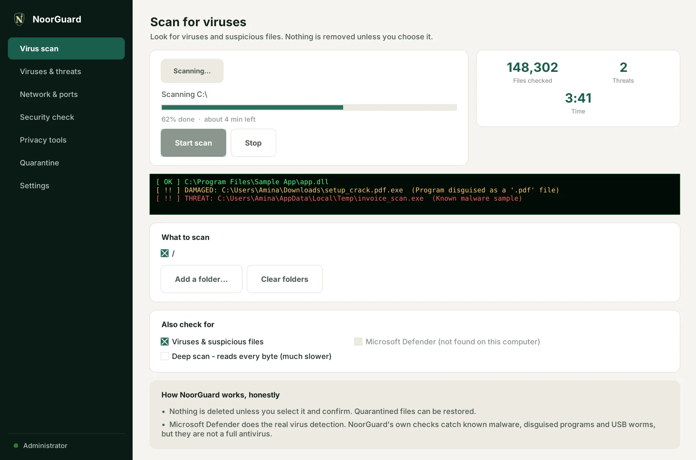

1
Virus scan
Runs NoorGuard's own checks for known malware, disguised programs and USB worms, plus an optional full Microsoft Defender scan.
- A green live scan screen with soft sounds
- Threats show in red, with the reason
- Quarantine locks threats away and can restore them
